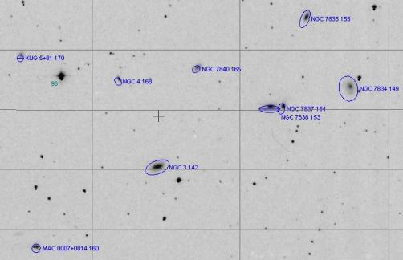

A galaxy cluster next to M30
- Name: ACO S963 (Abell-Corwin-Olewin)
- RA: 21h 39m 56s
- Dec: -22°28'
- Size: ~22'
- Distance: ~450 million l.y.
ACO S963 is a little-known galaxy cluster at a similar distance as the much richer Hercules Galaxy Cluster (AGC 2151). What makes it of special interest is its location -- just 45' north of M30!
ACO S963 contains a couple of dozen galaxies centered around the cD galaxy NGC 7103, and also includes NGC 7104, IC 1393 and IC 5122. Most of the additional members have 2MASS designations with high LEDA numbers. A redshift survey in 1993 by Garilli+ listed redshifts for 8 members and a labeled finder chart, but otherwise this cluster has not been studied.
The 2 NGC and 2 IC members were either discovered with the 26" Clark refractor at the Leander McCormick Observatory in Virginia or the 20" Clark refractor at the Chamberlin Observatory in Denver. Using a MegaStar finder chart, I logged a total of 10 members in my 18" (labeled on the DSS2 image below with my notes below at 225x and 286x).

1) ESO 531-013
21 39 26.1 -22 26 01
Size 0.9'x0.6'; PA = 159°
Extremely faint, round, ~18" diameter. Required averted vision.
2) IC 5122
21 39 45.9 -22 24 23
V = 15.4; Size 0.8'x0.4'; Surf Br = 14.0; PA = 55°
Very faint and small, round, 12" diameter. Collinear with a mag 14 star 2' ENE and a mag 13.3 star 5’ ENE.
3) LEDA 93990
21 39 48.5 -22 35 04
Size 0.6'x0.4'
Extremely faint, round, 12" diameter. Nearly on a line with a mag 14.4 star 3’ NNW and a mag 15.5 star 5' NNW.
4) NGC 7103
21 39 51.4 -22 28 26
V = 13.8; Size 1.4'x1.2'
Brightest of 10 galaxies in ACO S963. At 225x appeared moderately faint, irregularly round, 40"x35", weak concentration with no core or zones. A mag 13.7 star lies 2' ENE.
5) LEDA 134285
21 39 52.3 -22 45 36; Cap
Size 0.6'x0.4'; PA = 95°
Extremely faint, round, 12" diameter. Situated 40" S of a mag 14 star.
6) LEDA 197842
21 39 55.9 -22 38 53
Size 0.4'x0.3'; PA = 120°
Threshold object, extremely small, round, 6" diameter. Located 2.7' N of MCG -04-51-007.
7) MCG -04-51-007
21 39 59.2 -22 41 32
Size 0.65'x0.60’
Very faint, round, 18" diameter. On a line with two mag 15.2 and 14.6 stars just 0.8' SW and 1.4' SW.
8) NGC 7104
21 40 03.2 -22 25 29
V = 14.2; Size 0.8'x0.7'; Surf Br = 13.7; PA = 51°
Faint, irregularly round, 25"x20", very weak even in concentration.
9) IC 1393
21 40 14.2 -22 24 40
V = 14.6; Size 0.7'x0.5'; Surf Br = 13.5; PA = 172°
Very faint, elongated 3:2 N-S, 24"x16", very weak concentration. A mag 13 star is 2' NW and a mag 10 star 3' SE.
10) LEDA 93995
21 40 39.2 -22 29 21
Size 0.7'x0.6'
Very faint, round, 20" diameter. A mag 14.5 star lies 0.8' N.
So next time you're appreciating the beauty of M30, just slide your scope 45' north and see how many members you can identify.
Give it a go, and let us know!
Steve's follow-up — November 2nd, 2021, 01:57 AM
My observations, by the way, were made in the Sierras at an elevation of 7100 ft and a latitude close to +40°.
The cluster (declination -22.5°) was close to the meridian at the time, so the altitude for me was ~ 27° above the horizon.